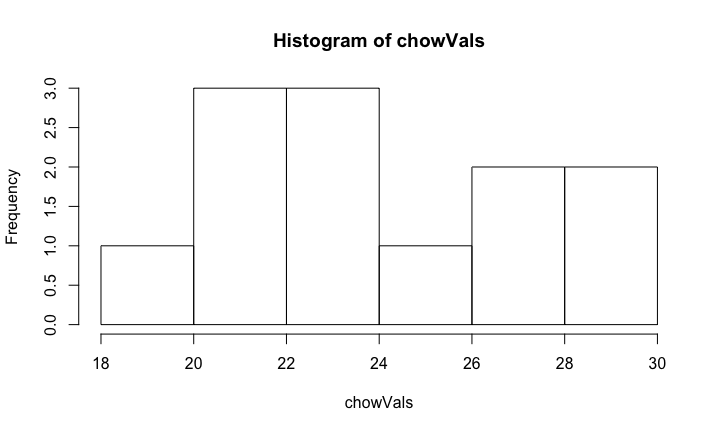
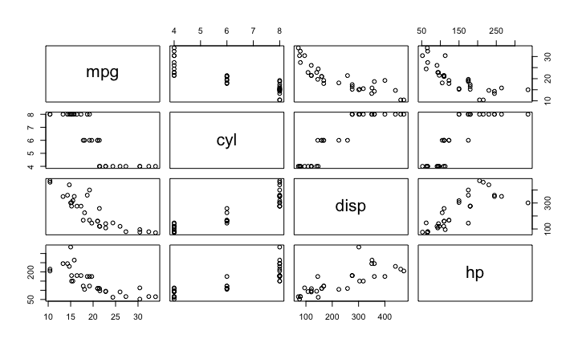

Wednesday, December 07, 2016
I can develop code for analysis on my Mac laptop. I can then install the same code on our massive computer cluster and run it in parallel on 1000 samples, monitor the process, and then update a database with R when complete.
This license means that R will always be available, will always be open source, and can grow organically without constraint.
The first step is to install R. You can download and install R from the Comprehensive R Archive Network (CRAN). It is relatively straightforward, but if you need further help you can try the following resources:
The next step is to install RStudio, a program for viewing and running R scripts. Technically you can run all the code shown here without installing RStudio, but we highly recommend this integrated development environment (IDE).
Try out the swirl tutorial, which teaches you R programming and data science interactively, at your own pace and in the R console. Once you have R installed, you can install swirl and run it the following way:
install.packages("swirl")
library(swirl)
swirl()
There are also many open and free resources and reference guides for R. Two examples are:
download.file('https://raw.githubusercontent.com/seandavi/hour_of_code/master/HourOfCode.Rmd',
destfile='HourOfCode.Rmd')
1 + pi + sin(3.7)
## [1] 3.611757
x = 1 y <- 2 3 -> z
<-, -> and = are all assignment operators.x = 1 y <- 2 3 -> z
+.1 + pi +
sin(3.7)
R has extensive help functionality built in.
help('print')
help(print)
?print
?data.frame
?`+`
help.search('microarray')
RSiteSearch('microarray')
help(newfunction).When you are working in R it is useful to know your working directory. This is the directory or folder in which R will save or look for files by default. You can see your working directory by typing:
getwd()
R can read files of many different types and from many different sources.
dir <- "https://raw.githubusercontent.com/genomicsclass/dagdata/master/inst/extdata/" url <- paste0(dir, "femaleMiceWeights.csv") dat <- read.csv(url)
library(downloader) ##use install.packages to install dir <- "https://raw.githubusercontent.com/genomicsclass/dagdata/master/inst/extdata/" filename <- "femaleMiceWeights.csv" url <- paste0(dir, filename) if (!file.exists(filename)) download(url, destfile=filename)
head(dat) tail(dat) summary(dat) dim(dat)
head(dat)
## Diet Bodyweight ## 1 chow 21.51 ## 2 chow 28.14 ## 3 chow 24.04 ## 4 chow 23.45 ## 5 chow 23.68 ## 6 chow 19.79
tail(dat)
## Diet Bodyweight ## 19 hf 29.58 ## 20 hf 30.92 ## 21 hf 34.02 ## 22 hf 21.90 ## 23 hf 31.53 ## 24 hf 20.73
summary(dat)
## Diet Bodyweight ## chow:12 Min. :19.79 ## hf :12 1st Qu.:22.36 ## Median :25.16 ## Mean :25.32 ## 3rd Qu.:28.14 ## Max. :34.02
dim(dat)
## [1] 24 2
library(dplyr) chow <- filter(dat, Diet=="chow") #keep only the ones with chow diet head(chow)
## Diet Bodyweight ## 1 chow 21.51 ## 2 chow 28.14 ## 3 chow 24.04 ## 4 chow 23.45 ## 5 chow 23.68 ## 6 chow 19.79
chowVals <- select(chow,Bodyweight) head(chowVals)
## Bodyweight ## 1 21.51 ## 2 28.14 ## 3 24.04 ## 4 23.45 ## 5 23.68 ## 6 19.79
chowVals <- filter(dat, Diet=="chow") %>% select(Bodyweight) %>% unlist hist(chowVals)

The ggplot2 package is a relatively novel approach to generating highly informative publication-quality graphics. The "gg" stands for "Grammar of Graphics". In short, instead of thinking about a single function that produces a plot, ggplot2 uses a "grammar" approach, akin to building more and more complex sentences to layer on more information or nuance.
The ggplot2 package assumes that data are in the form of a data.frame. In some cases, the data will need to be manipulated into a form that matches assumptions that ggplot2 uses. In particular, if one has a matrix of numbers associated with different subjects (samples, people, etc.), the data will usually need to be transformed into a "long" data frame.
To use the ggplot2 package, it must be installed and loaded. Assuming that installation has been done already, we can load the package directly:
library(ggplot2)
We are going to use the mtcars dataset, included with R, to experiment with ggplot2.
data(mtcars)
mtcars dataset using View, summary, dim, class, etc.We can also take a quick look at the relationships between the variables using the pairs plotting function.
pairs(mtcars[,1:4])

download.file('https://raw.githubusercontent.com/seandavi/hour_of_code/master/ggplot2.Rmd',
destfile='ggplot2.Rmd')
sessionInfo()
## R Under development (unstable) (2016-10-26 r71594) ## Platform: x86_64-apple-darwin13.4.0 (64-bit) ## Running under: macOS Sierra 10.12.1 ## ## locale: ## [1] en_US.UTF-8/en_US.UTF-8/en_US.UTF-8/C/en_US.UTF-8/en_US.UTF-8 ## ## attached base packages: ## [1] stats graphics grDevices utils datasets base ## ## other attached packages: ## [1] dplyr_0.5.0 nycflights13_0.2.0 ggplot2_2.2.0 ## [4] BiocStyle_2.3.15 knitr_1.15.1 ## ## loaded via a namespace (and not attached): ## [1] Rcpp_0.12.8.2 magrittr_1.5 munsell_0.4.3 ## [4] colorspace_1.3-1 R6_2.2.0 stringr_1.1.0 ## [7] plyr_1.8.4 tools_3.4.0 grid_3.4.0 ## [10] gtable_0.2.0 DBI_0.5-1 htmltools_0.3.5 ## [13] yaml_2.1.14 lazyeval_0.2.0 rprojroot_1.1 ## [16] digest_0.6.10 assertthat_0.1 tibble_1.2 ## [19] codetools_0.2-15 evaluate_0.10 rmarkdown_1.2.9000 ## [22] labeling_0.3 stringi_1.1.2 methods_3.4.0 ## [25] scales_0.4.1 backports_1.0.4